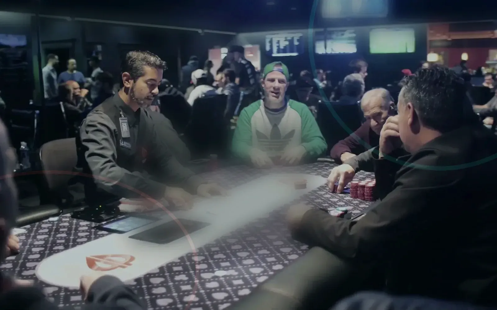

Event identity
The result matches a confirmed physical event.

New Zealand physical pokerroom guide
Archived outcomes and broadcast links appear only after the venue confirms the event and publication rights.
Names, standings, prizes and images require venue confirmation and appropriate publication rights.
VISITOR INFORMATION
Before a result appears, the guide verifies its source and scope.
The result matches a confirmed physical event.
Names and images are published only when permitted.
No unverified guaranteed amount is shown.
Video and photos have lawful publication permission.